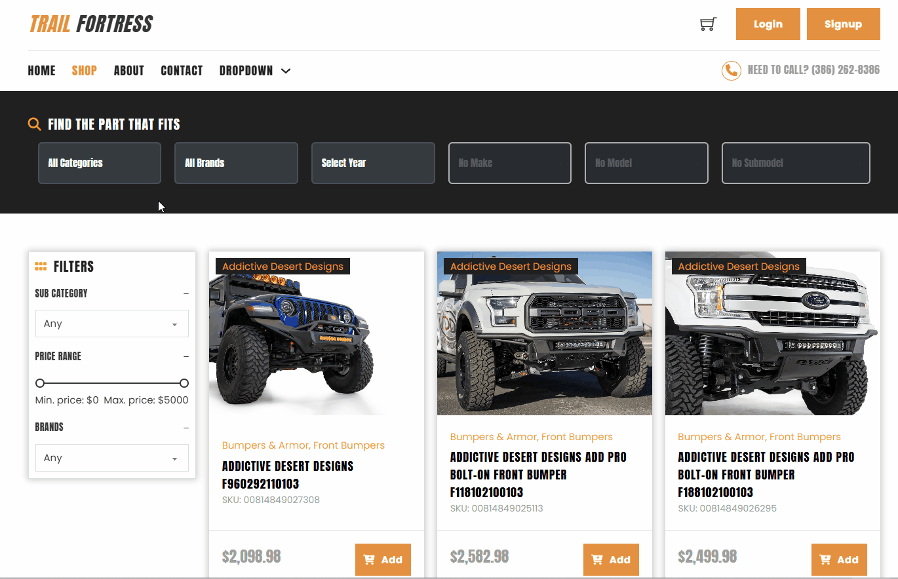
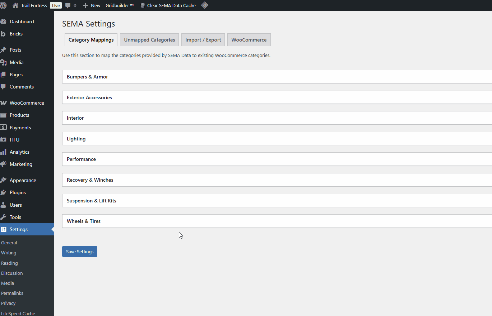

01
SEMA Automotive Parts Catalog
A large-scale WordPress plugin powering 58,477 products across 41 brands. Features dedicated database tables for vehicle fitment, bidirectional facet filters, and multi-layer caching — integrated with WP Grid Builder, Bricks Builder, and Meta Box.